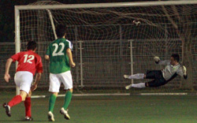
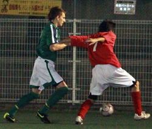

|
YC&AC, Saturday 8th May.
If the guys are taking turns dry-humping Dan in the center circle after the game, then you know something went right. Hibs are finally champs again, and it's because this year we can win ugly when we have to.
It didn't look good early, BFC were loose and annoyingly confident. A bad call on the formation plus nerves didn't help, and the Brits were all over us. Shosuke has killed Hibs since he came in the league and he was at it again, drawing dangerous fouls all over the place. They had tons of chances and it was Hitoshi, plus Mike's best game since he joined at the back, that kept us in it. Still, Carlos ran amok and eventually put Sho through, our linesman said no offsides (later that night he also refused to concede out of bounds on a terrible email on his Blackberry) the whole back line stopped, and Shosuke went down in the box and earned his third PK in a row against us. Carlos left Hitoshi no chance (he's now 1 for 3 over that span), 1-0 to the bad guys. It could've been worse, a few poor BFC finishes in the box, a barely missed overhead kick by Pabs, a ridiculous 40-yard blast by Car off the crossbar, but we held on. Hibs needed help in midfield, alas former keyman Bevan was on the sidelines, his jar of caffeine pills collecting dust somewhere far away. So back to three in the middle we go with 15 minutes left in the half, Sam and Edu give us an immediate boost and things begin to turn as we create our first real chances, but nothing doing, 1-0 into half.
The scene at halftime isn't pretty, and a hapless water bottle feels the full chicken-legged wrath of Clan McKenna.
In the second half it is a totally different game, with Raffa and Jay sharing the midfield we can get stuck in and break up their play. The fouls begin to pile up and the game gets a bit edgy, but Vladimir does well to keep things from boiling over. Eventually a BFC foul about 30 yards out gives us a good chance, and Yohei steps up and drives in a low curving cross, as with last week vs YCAC, bodies collide and the ball slips through untouched, 1-1 it is. It takes a few yellow cards, but we begin to get our mojo back - the defense is repelling everything, Andre is charging around taking no prisoners, I thought Edu had "best miss of the season" locked up with his volley from last week, but he beats it by going completely horizontal for a cross, and then eventually the ball finds Dan far right, he beats his man clean and smashes it far post from the edge of the box, a beauty against his old team, 2-1 to the green. BFC then pour forward, and per Raffa's post-game analysis Hibs "just kicked everything that moved" over the last 15 minutes. We give up an endless string of free kicks but the back line and Hitoshi hold firm, the whistle blows, and the best team in the league wins the championship.
Report by Andre Pinto
|